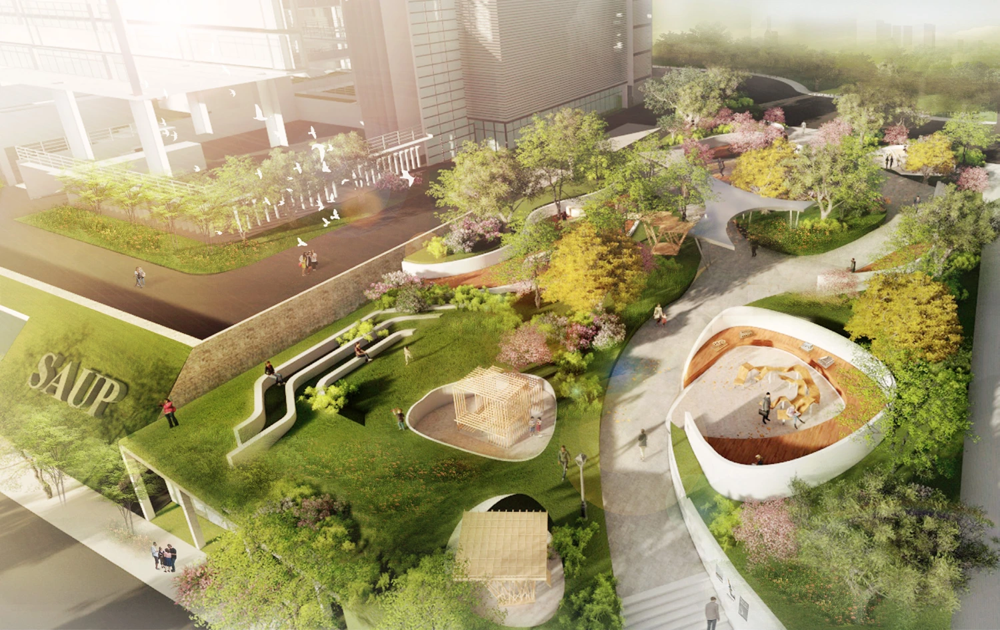
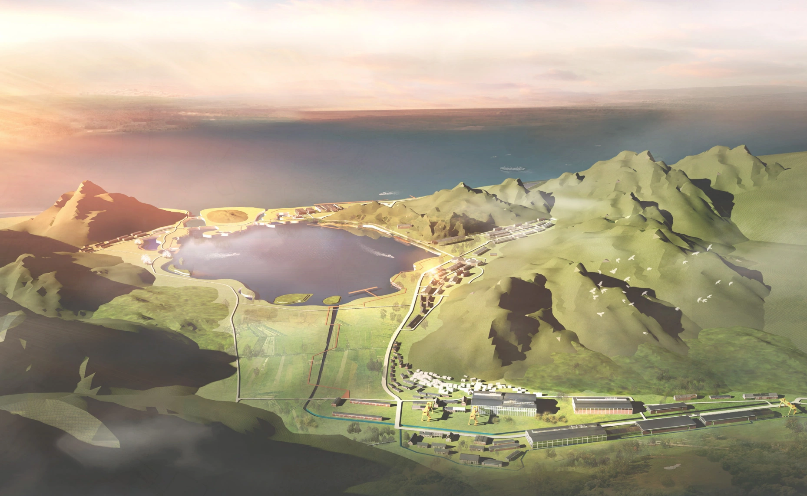
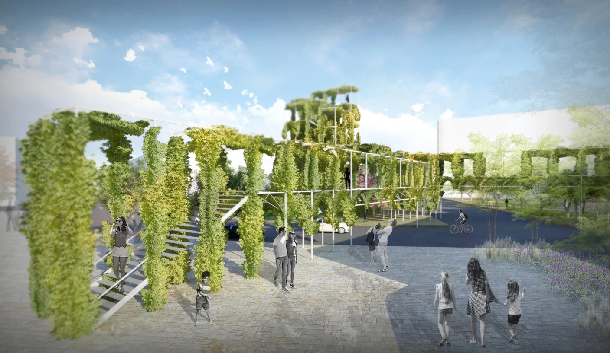
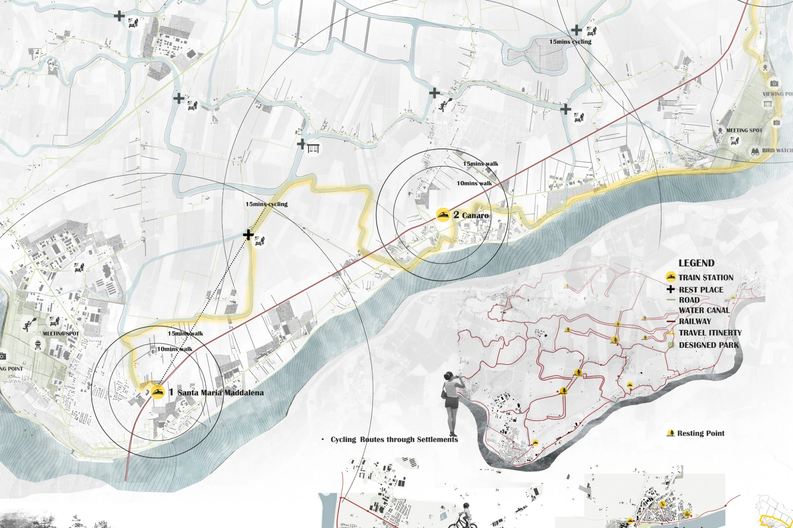
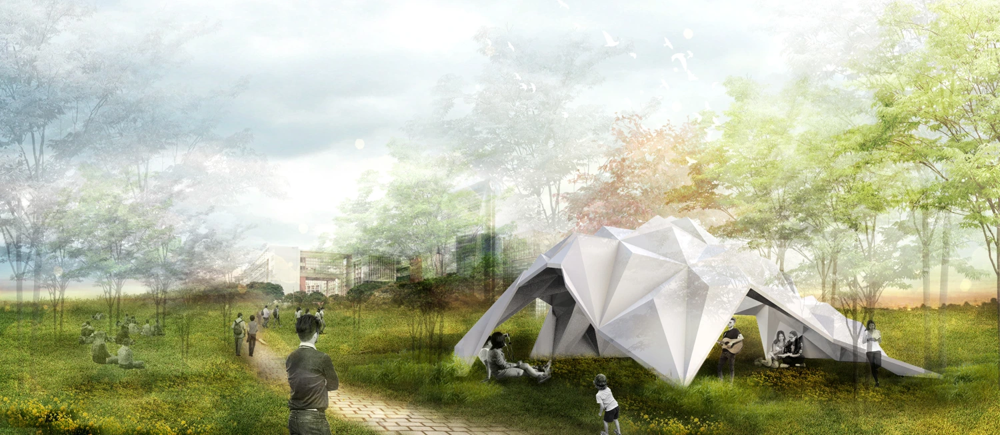
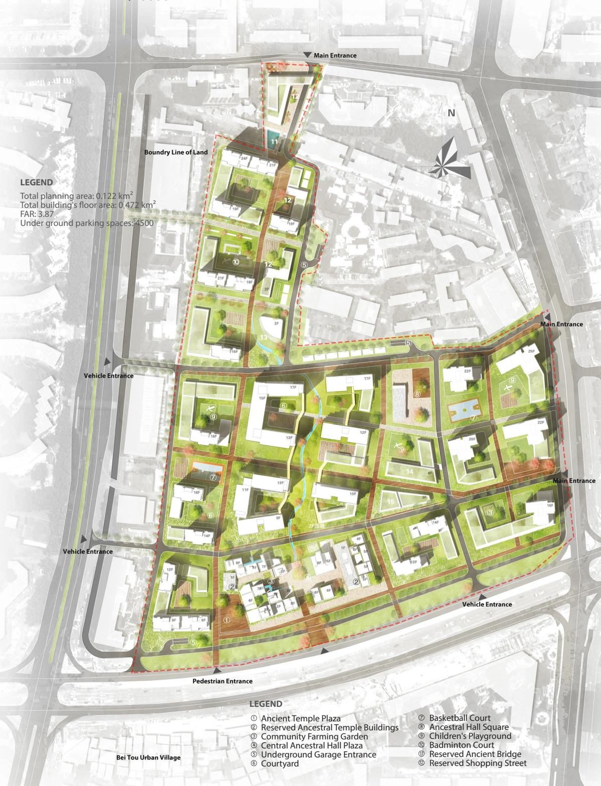
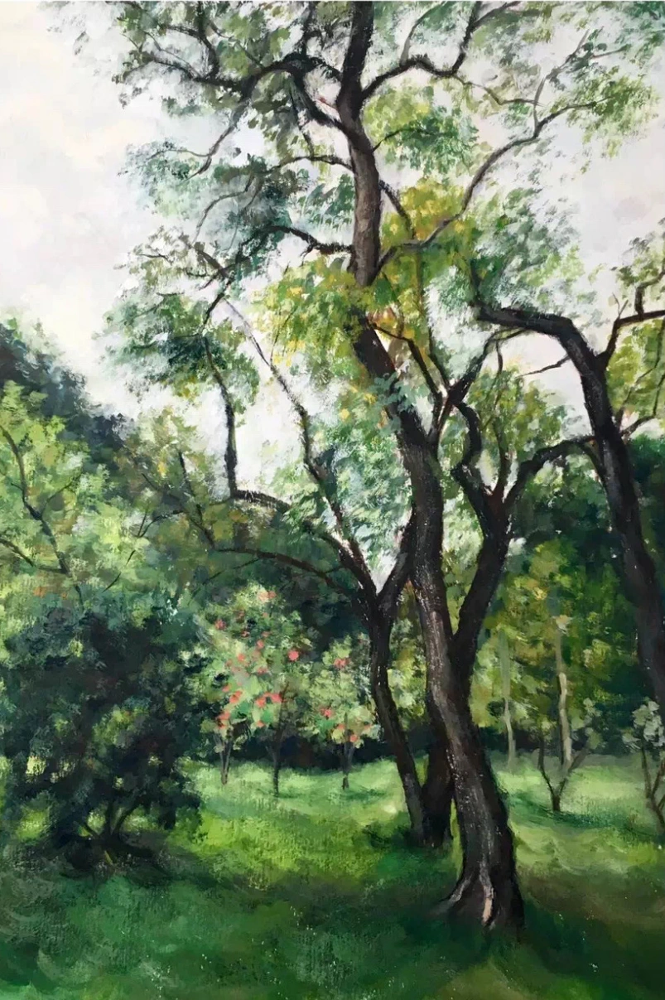

Design portfolio
Urban design, landscape, architecture and personal artwork.

An age-friendly Kowloon City
Community engagement, accessible streets and ageing in place.

Smart Community
A neighbourhood proposal for Majialong that brings workplaces, housing and shared public spaces together.

Layered Space
A landscape renewal proposal for the School of Architecture and Urban Planning at Shenzhen University.

Earth Roots Renewal
Reimagining Jiangzhou Shipyard through industrial heritage, ecological restoration and new uses for a changing community.

Serpentine Forest
An elevated planted walkway linking key destinations in central Milan, with places to pause, meet, and play.

Resilient Landscape Design
A landscape response to recurring Po River floods, integrating water-sensitive public space, productive land and elevated routes in Polesine.

Parametric Design
From crease-folding experiments and physical models to a landscape structure.

Housing & community design
Residential neighbourhoods, shared gardens and modular housing, explored across three design studies.

Painting, Sketching & Photography
Watercolours, observational sketches and photographs from campus life and travels.